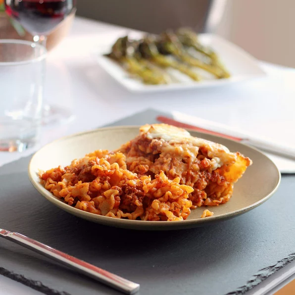

Lasagna

This is lasagna. You will make this lasagna. You will love this lasagna. No bake lasagna right on your stovetop - fast and easy alternative to store-bought.
Ingredients
- 1/2 lb ground beef
- 1/2 jar spaghetti sauce
- 1 can diced tomatoes
- 2 cups dried malfada noodles
- 1 clove garlic, minced
- 2 teaspoon dried basil
- 1 teaspoon salt
- 1 teaspoon black pepper
Steps
- Step 1. Heat a large skillet over medium-high heat. Cook and stir beef in the hot skillet until browned and crumbly, 5-7 minutes. Drain and discard grease. Add spaghetti sauce, tomatoes, onlion, garlic, basil, oregano, salt, and pepper. Cook over low heat until sauce is hot, about 15 minutes.
- Step 2. Meanwhile, fill a large pot with lightly salted water and bring to a rolling boil. Cook mafalda noodles at a boil until tender yet firm to the bite, about 8 minutes. Drain.
- Step 3. Add cooked and drained noodles to the suace and stir until completely coated. Sprinkle mozzarella cheese on top.
- Step 4. Set an oven rack about 6 inches from the heat source and preheat the ovens broiler.
- Step 5. Place skillet under the hot broil and cook until cheese is golden and bubbly, 3 to 5 minutes.